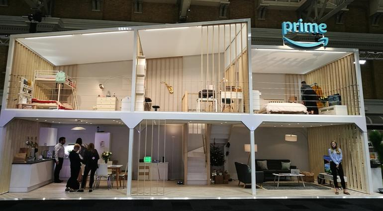

For consumers, the smart home is probably where they are likely to come into contact with internet-enabled things, and it's one area where the big tech companies (in particular Amazon, Google, and Apple) are competing hard.
The most obvious of these are smart speakers like Amazon's Echo, but there are also smart plugs, lightbulbs, cameras, thermostats, and the much-mocked smart fridge. But as well as showing off your enthusiasm for shiny new gadgets, there's a more serious side to smart home applications. They may be able to help keep older people independent and in their own homes longer by making it easier for family and carers to communicate with them and monitor how they are getting on. A better understanding of how our homes operate, and the ability to tweak those settings, could help save energy -- by cutting heating costs, for example.